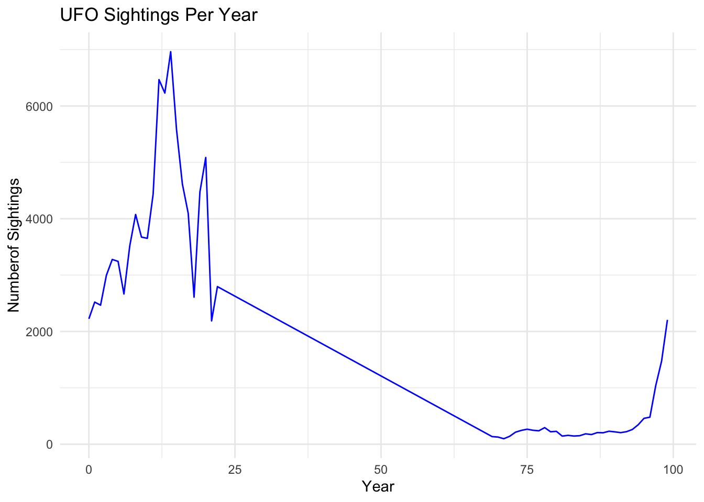
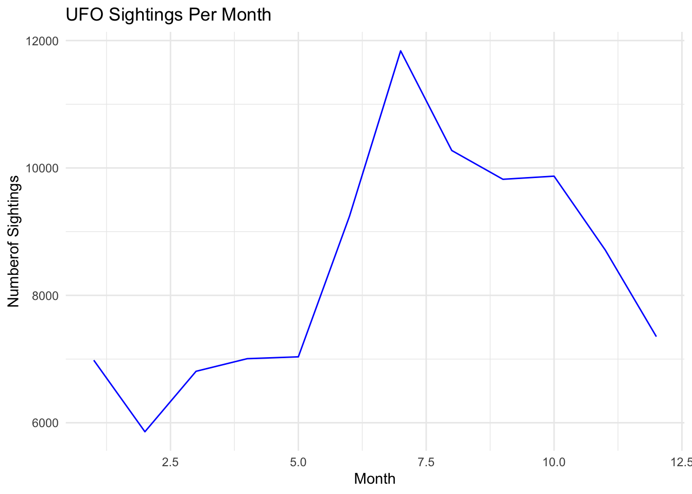
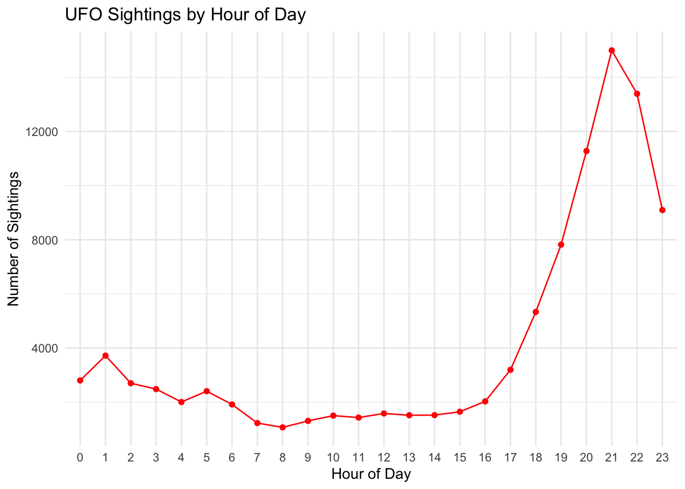
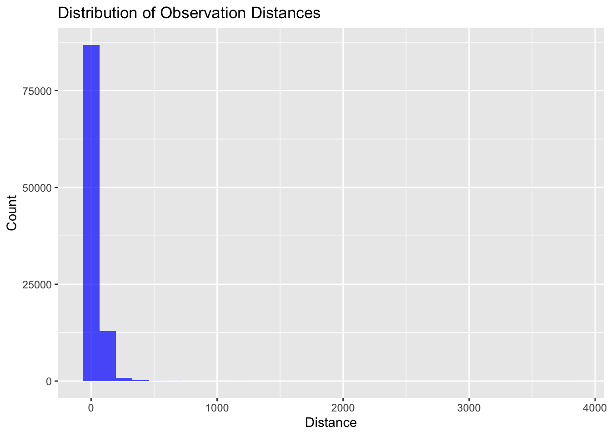
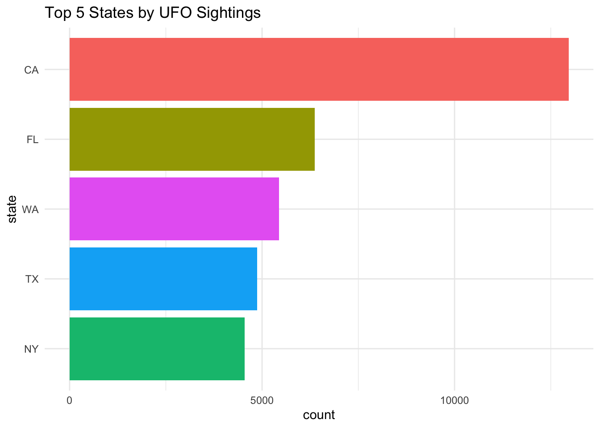

EDA
library(tidyverse)
library(lubridate)ufo = read_csv("./data/ufo_clean.csv")## Rows: 100820 Columns: 13
## ── Column specification ───────────────────────────────────
## Delimiter: ","
## chr (7): city, state, shape, duration, text, closest_city, location
## dbl (4): city_latitude, city_longitude, duration_clean, dist
## dttm (2): date_time, posted
##
## ℹ Use `spec()` to retrieve the full column specification for this data.
## ℹ Specify the column types or set `show_col_types = FALSE` to quiet this message.# Create a new subset of data for further analysis
ufo_subset = ufo |>
select(city, state, date_time, shape, city_latitude, city_longitude, dist, location)# Create a new column with date only
ufo_subset = ufo_subset |>
mutate(date = as.Date(date_time),
year_month = format(date, "%Y-%m"))# Creating a year_month column
monthly_trends = ufo_subset |>
count(year_month) |>
arrange(year_month)Frequency of sightings per year
# Convert date to year
ufo_subset |>
mutate(
year = format(as.Date(date), "%y")) |>
count(year) |>
ggplot(aes(x = as.numeric(year), y = n)) +
geom_line(color = "blue") +
labs(title = "UFO Sightings Per Year",
x = "Year",
y = "Numberof Sightings") +
theme_minimal()
Frequency of sightings per month
# Convert date to month
ufo_subset |>
mutate(
month = format(as.Date(date_time), "%m")) |>
count(month) |>
ggplot(aes(x = as.numeric(month), y = n)) +
geom_line(color = "blue") +
labs(title = "UFO Sightings Per Month",
x = "Month",
y = "Numberof Sightings") +
theme_minimal()
Frequency sightings by hour of day
ufo_subset |>
mutate(hour = hour(ymd_hms(date_time, quiet = TRUE))) |>
filter(!is.na(hour)) |>
count(hour) |>
ggplot(aes(x = as.factor(hour), y = n, group = 1)) +
geom_line(color = "red") +
geom_point(color = "red") +
labs(title = "UFO Sightings by Hour of Day",
x = "Hour of Day",
y = "Number of Sightings") +
theme_minimal() +
scale_x_discrete(breaks = 0:23, labels = 0:23)
Shape Analysis
shape_distribution = ufo_subset |>
count(shape) |>
arrange(desc(n))
ggplot(shape_distribution, aes(x = reorder(shape, n), y = n)) +
geom_bar(stat = "identity") +
labs(title = "Distribution of UFO Shapes", x = "Shape", y = "Count") +
theme(axis.text.x = element_text(angle = 90, hjust = 1))
Distance Analysis
ggplot(ufo_subset, aes(x = dist)) +
geom_histogram(bins = 30, fill = "blue", alpha = 0.7) +
labs(title = "Distribution of Observation Distances", x = "Distance", y = "Count")
Distribution by State
ufo_subset |>
count(state, name = "count") |>
arrange(desc(count)) |>
slice_head(n = 5) |>
ggplot(aes(x = reorder(state, count),
y = count,
fill = state)) +
geom_bar(stat = "identity") +
labs(title = "Top 5 States by UFO Sightings",
x = "state",
y = "count") +
theme_minimal() +
coord_flip() +
theme(legend.position = "none")
# Export a new csv file
write.csv(ufo_subset, file = "./data/ufo_subset.csv", row.names = FALSE)